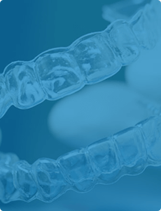

Лапароскопическая хирургия —
современный подход к оперативным
вмешательствам
Эндоскопическая хирургия — самое передовое, самое активно развивающееся направление современной хирургии.
Какие проблемы может решить
лапароскопическая хирургия?
Хирургия грыж
Читать больше Кисты и опухоли печени
Читать большеКак проходит хирургическое
вмешательство?
Мы контролируем каждый этап во время операции,
все показатели вашего состояния.
Операция выполняется под наркозом, по этому неприятные ощущения во время операции полностью исключены.
Лапароскопическая операция делается через небольшие проколы от 5 до 10 миллиметров. Через эти проколы вводятся специальные инструменты-троакары, которые во время введения не разрезают ткани, а лишь раздвигают их. Через установленные троакары можно легко вводить и извлекать различные рабочие инструменты.
Оптическая система – лапароскоп, позволяет передавать внутриполостное изображение высокого качества, что гарантирует полный контроль во время операции.
Электрокоагулятор способен проводить операцию практически бескровно.
Мы используем только биологически инертный металл во время операции – титан.
После наложения косметических швов на ткани и в области пупка, операция заканчивается.
Как подготовиться к операции?
Удобным для вас способом, вы записываетесь на консультацию к нашему специалисту. Мы обговариваем день операции и начинаем подготовку к ней.
В день консультации можно сдать весь перечень анализов в нашей лаборатории.
Предоперационные консультации анестезиолога и терапевта будут предоставлены в удобное для вас время.
За 1 день перед операцией вы размещаетесь в палате любого, выбранного вами уровня комфорта, в нашей больнице.

Почему у нас
Потому что у нас лучшее место для решения проблем со здоровьем!
Комфортно
Палаты повышенной комфортности и трехразовое питание. Во всем отделении доступен быстрый и бесплатный Wi-Fi. Легкое пробуждение после операции.
Быстро
Быстро оформляем все документы. Возможность использования других ресурсов больницы для проведения исследований.
Профессионально
Высококвалицфицированные специалисты, инновационное оборудование, индивидуальный подход к каждому пациенту.
Безопасно
Мы контролируем каждый этап во время операции. Круглосуточное медицинское наблюдение. Современное наркозное оборудование.
Доступно
Высококвалицфицированные специалисты, инновационное оборудование, индивидуальный подход к каждому пациенту.
Удобно
Мы контролируем каждый этап во время операции. Круглосуточное медицинское наблюдение. Современное наркозное оборудование.